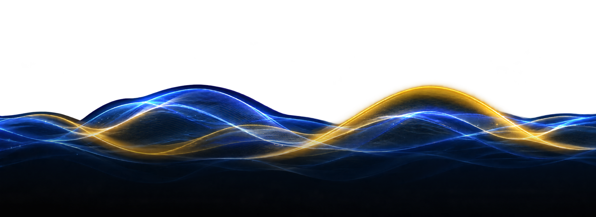
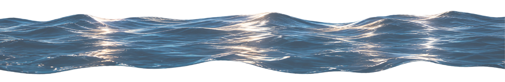

1 / 3
REFLEXIÓNY CONCLUSIONES
Este proyecto me permitió comprender que la visualización de datos va más allá de presentar cifras o gráficas, ya que también implica interpretar información y transformarla en una experiencia visual, comprensible e interactiva.

